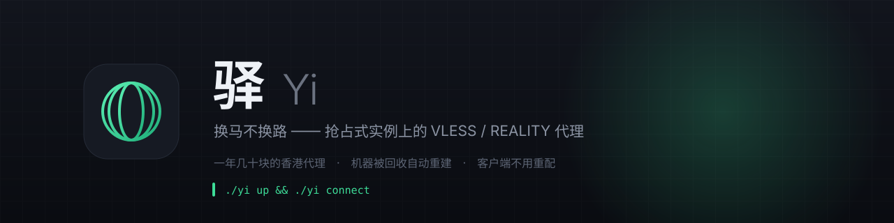

“买台 VPS，跑个脚本”假设机器是长期的、IP 是固定的。竞价实例两条都不满足： 随时被回收、IP 每次都变、密钥也会变。这个项目的绝大部分代码在处理这件事。
声明式期望状态 + 调和循环：内核崩了、地址变了、系统代理被人关了，8 秒内自己纠正。
凭据持久化（UUID + REALITY 密钥对），重建出来对客户端仍是“同一台”。机器换了，连接不换。
后端日志映射成真实阶段推给界面：创建 → 启动 → 分配 IP → 安装 → 选择伪装目标 → 自检。
绝不把系统代理指向没人监听的端口；内核起不来就自动回退直连，不让你整台机器失联。
REALITY 要求伪装目标的证书链足够短。工具按候选列表逐个起服务实测，用第一个真正通的。
按流量计费 + 预算闸门 + 资源 ttl 标签；创建失败自动回滚，不留孤儿资源。
规则是分层的，顺序本身就是语义 —— 先把局域网摘出去，再按域名/地区判断， 最后才轮到兜底。默认接上社区维护的 Loyalsoldier/clash-rules： 12 个集合、约 34 万条规则，每天自动更新。
实测过：规则集下载失败时内核不会报错，它照常启动。所以内置的局域网直连和
GEOIP 一直保留当保险 —— 也正因为它失败得这么安静，状态由
./yi rules 如实报出来，不靠猜。
raw.githubusercontent.com 实测直接超时，所以依次试
jsdelivr / ghproxy 等镜像，必要时走你自己的代理去取，取回来落在本地缓存。
界面「规则」页可以直接增删自己的规则。社区规则集是只读的 —— 往里加东西下次更新就会被覆盖，与其让它静默失效，不如不给这个入口。
用系统自带的 WebKit 当渲染层，所以应用不到 1 MB （Electron 约 200 MB、Tauri 约 10–20 MB），启动也最快； 壳里没有任何网络逻辑。
香港 2C2G 实测出价 0.03 元/小时
按量计费约 0.5–0.8 元/GB
每天几小时 + 几十 GB，约 每月 ¥20–50